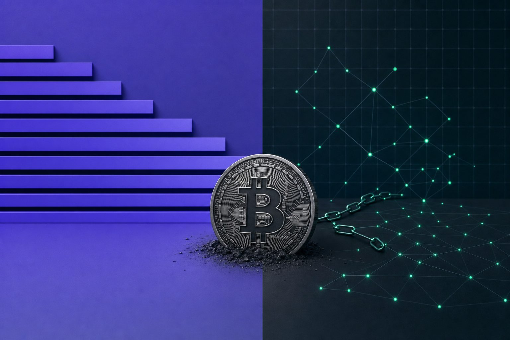
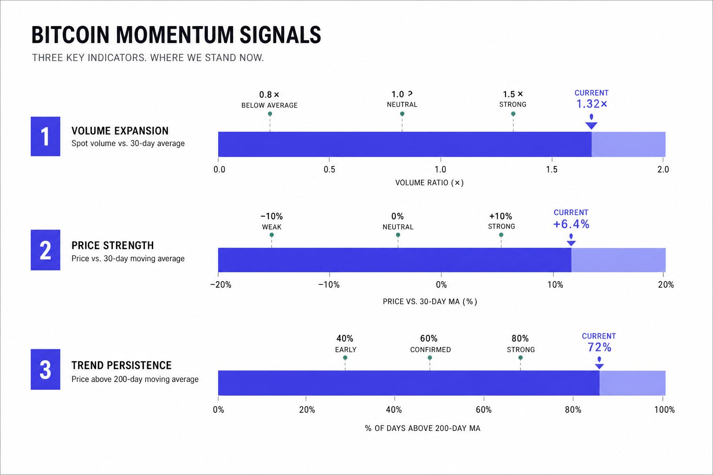
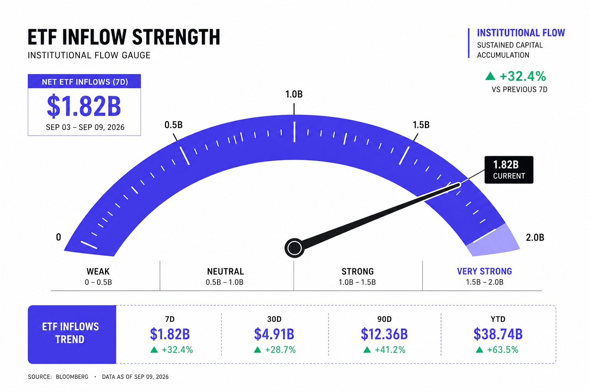
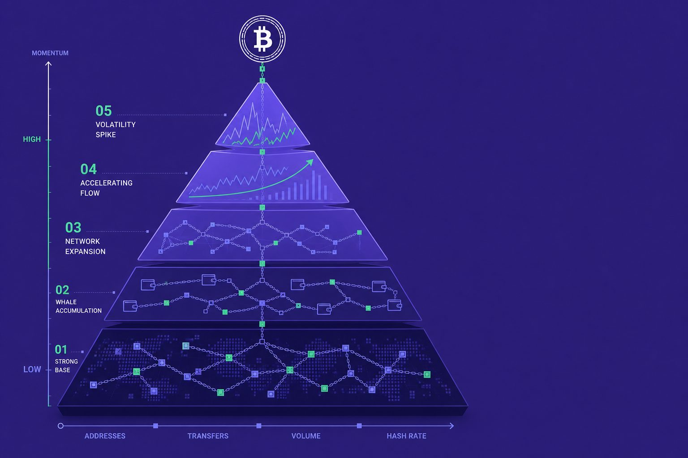
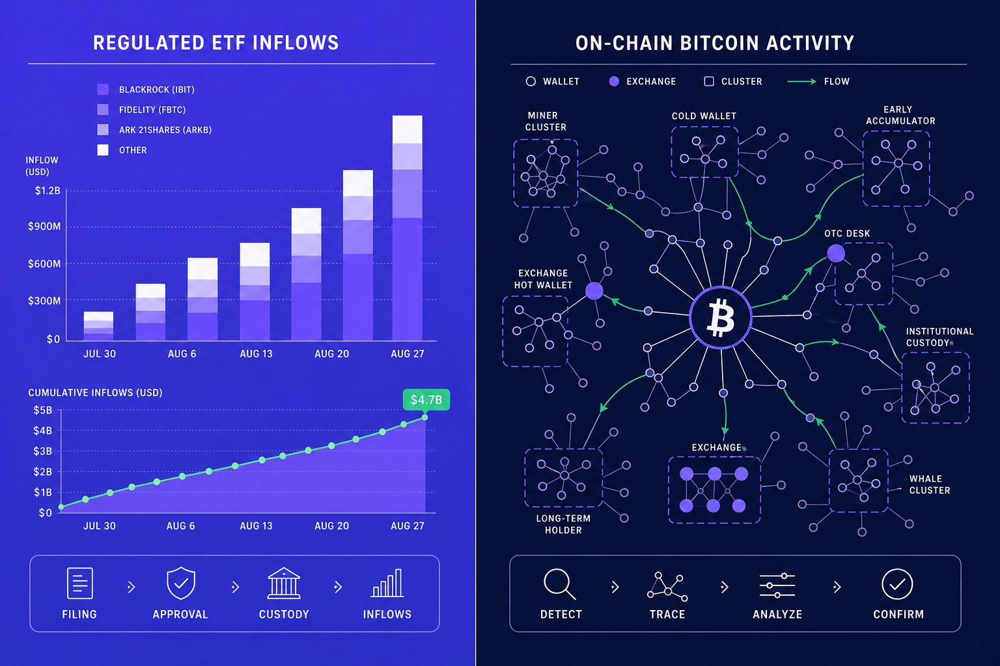

Bitcoin Analysis
ETF Inflows vs On Chain Metrics for Bitcoin Momentum

Do ETF inflows move Bitcoin, or just confirm momentum already in play? ETF inflows now shape the daily Bitcoin narrative, but they are only one demand signal. Price watchers often split between fund flow data and blockchain-native clues. According to Bitcoin’s $3.4 Billion ETF Bleed Looks More Cyclical Than Structural | Investing.com, GBTC drove about 35% of a record weekly outflow. That shows how fast traditional vehicles can sway sentiment. Yet on-chain analysis often catches holder behavior before flows hit headlines. This comparison maps ETF inflows against on-chain metrics by speed, clarity, and practical value for crypto market analysis. The goal is simple: show when institutional crypto demand data leads, when blockchain data leads, and why both matter.
Table of Contents
Evaluation Criteria for Bitcoin Momentum Signals

What counts as a useful momentum indicator
A useful Bitcoin momentum signal must do five things well. It should be timely, transparent, and easy to read. It should also filter noise and reflect real capital behavior. In crypto market analysis, the best indicator is rarely one metric alone.
That matters because different signals answer different questions. ETF inflows show demand inside regulated products and help track institutional crypto participation. On-chain analysis shows wallet flows, exchange balances, and holder behavior across a broader network. For example, one signal is like watching traffic at a bank branch, while the other maps movement across the whole city.
How ETF demand and blockchain data will be compared
This comparison uses explicit criteria: timeliness, transparency, signal-to-noise ratio, institutional relevance, and ease of interpretation. Each signal will be judged against the same framework. That keeps the review neutral and scenario-based.
ETF demand mainly captures regulated investment demand. Blockchain data captures behavior from traders, miners, exchanges, and long-term holders. Can one metric show institutional crypto demand clearly? Sometimes, but only within its lane. ETF inflows can show that lane well, while on-chain data often gives wider context.
The key gap is not choosing one over the other. It is learning what to do when both signals disagree. For example, fund demand may rise while exchange outflows weaken. That mix can suggest headline interest without broad network follow-through.
Where false signals usually appear
False signals often appear when readers confuse visibility with completeness. A clean ETF number can look decisive, yet miss offshore activity or derivatives positioning. A sharp on-chain move can also mislead if it reflects internal transfers, not fresh conviction.
Research from Following the Flows: ETFs, Stablecoins, and Where Capital Actually Went shows how allocation shifts can distort simple flow readings. Meanwhile, Bitcoin’s $3.4 Billion ETF Bleed Looks More Cyclical Than Structural | Investing.com shows that product structure can shape flows apart from pure Bitcoin momentum.
ETF Inflows as an Institutional Crypto Signal

Overview
ETF inflows track net capital entering a spot Bitcoin ETF. That makes them a clean proxy for regulated demand. When money moves into these funds, the market can see fresh buying inside a familiar wrapper. For traditional finance desks, that wrapper matters because it fits existing brokerage, compliance, and custody systems.
This signal became useful because flows are reported daily and compared across issuers. For example, one fund may gather assets while another loses them on the same day. That split can reveal whether demand is broad or simply rotating. In crypto market analysis, that makes fund flow data feel like a scoreboard for institutional crypto participation.
Key Features
Several traits make this signal easy to follow.
1. Daily flow reporting creates a steady stream of fresh data.
2. Fund disclosures make issuer-to-issuer comparisons straightforward.
3. The structure shows how traditional market participants are behaving.
4. Media outlets amplify the numbers, which raises their influence.
For example, fee differences can shape where money lands. According to Investing.com, some products charged 0.20%. Separately, Bitcoin Foundation noted 0.25% pricing for major rivals. That makes flows easier to compare because investors can see cost, brand, and distribution effects in plain sight.
Strengths
The main strength is clarity. If large funds attract capital for several sessions, that often confirms a risk-on backdrop. It does not prove price must rise, but it does show that regulated buyers are stepping in.
This also answers a common question: do ETF inflows move Bitcoin price? Sometimes they can support price by adding visible demand. But they work best as confirmation, not as a guaranteed trigger. That is why pieces like Bitcoin Stuck at $63,000: Why ETF Inflows Aren't Enough Anymore resonate during sideways periods.
Weaknesses
This signal has clear limits. ETF inflows can lag the market, especially after sharp rallies. In those moments, flows may reflect momentum chasing rather than early conviction. So yes, they can lag price moves.
They also miss offshore buying, direct wallet accumulation, and private custody decisions. Rebalancing can distort single-day prints as well. A large number may reflect portfolio mechanics, not a new macro view. Amberdata’s Following the Flows: ETFs, Stablecoins, and Where Capital Actually Went also highlights how capital flows can shift across venues, which matters when on-chain analysis tells a different story.
Best For
This signal suits readers who want a high-level read on Wall Street participation. It fits sentiment validation, macro narratives, and institutional crypto tracking. It also works well for investors who prefer regulated market data over wallet-level noise.
The main pain point is interpretation. Strong inflows do not guarantee upside. Single-day numbers can mislead. For example, a sharp intake after a rally may look bullish, yet it may simply show late positioning. For broader context, Bitcoin Stuck Below $65K: Why the Market Won't Move offers a useful companion view.
On Chain Analysis for Bitcoin Momentum

Overview
On-chain analysis studies Bitcoin’s public ledger for momentum clues. It tracks exchange balances, active addresses, realized price, SOPR, and long-term holder trends. Unlike ETF inflows, which show regulated fund demand, this method reads activity across the full network. That wider lens makes it useful for crypto market analysis when price action looks mixed.
For example, exchange outflows can hint at accumulation before headlines catch up. A rising SOPR can show coins moving at profit, which may signal stronger risk appetite. Realized price helps frame whether holders sit above or below their aggregate cost basis. Wallet behavior adds context that fund flow tables cannot provide on its own.
Key Features
Its first advantage is direct network visibility. The data comes from Bitcoin’s ledger, not from a single product wrapper. That gives broader coverage than regulated vehicles alone, including miners, long-term holders, exchanges, and smaller market participants. Following the Flows: ETFs, Stablecoins, and Where Capital Actually Went highlights that capital can move through several crypto-native channels at once.
A second feature is granularity. Analysts can study wallet behavior, cohort trends, and transfer patterns in detail. Multiple indicators also help. Exchange reserves, realized price, SOPR, and holder age bands each capture a different part of momentum.
Strengths
On-chain analysis can flag behavioral change earlier than fund flow data. It can show accumulation, distribution, or miner selling before those shifts appear in daily ETF reports. That answers a core question: it reveals intent and positioning changes that ETF inflows cannot.
It also separates participant groups better. For example, long-term holders reducing activity tells a different story than exchange inflows from short-term traders. This added depth improves crypto market analysis during messy market phases. As Bitcoin Stuck at $63,000: Why ETF Inflows Aren't Enough Anymore argues, flow data alone can miss what happens under the surface.
Weaknesses
The trade-off is complexity. Metrics can conflict, and wallet labels are never perfect. Users often drown in dashboards, overrate isolated signals, or treat old cycle patterns like fixed rules. Technical depth can look predictive even when it is not.
Macro shocks also weaken some signals. According to Bitcoin’s $3.4 Billion ETF Bleed Looks More Cyclical Than Structural | Investing.com, the U.S. 10-year yield stayed near 4.45%, showing how broader rates can dominate crypto setups. The same source noted Nvidia moved 1.80%, a reminder that cross-market moves can shape sentiment faster than blockchain data alone.
Best For
This approach fits readers who want deeper market structure insight. It suits those seeking earlier turning-point clues and a fuller view than ETF data offers. It is most useful when paired with patience, context, and clean process. On-chain metrics are not always more reliable than fund flows, but they are often more revealing when used as part of a broader framework.
ETF Inflows vs On Chain Analysis Which Fits Best

The comparison comes down to clarity versus depth. ETF inflows offer a cleaner read on institutional crypto demand. On-chain analysis offers a wider and often earlier view of behavior across the Bitcoin network. Neither signal stands alone for every market phase, so the better choice depends on the reader’s goal.
| Criteria | ETF inflows | On-chain analysis |
| Scope | Regulated fund demand | Network-wide participant behavior |
| Timeliness | Clear, but sometimes later | Often earlier, but noisier |
| Transparency | Simple daily reports | Deep data, harder to interpret |
| Institutional relevance | Strong | Indirect, unless paired with labels |
| Learning curve | Lower | Higher |
| Common blind spots | Misses direct custody and offshore activity | Label errors and conflicting metrics |
| Best use cases | Macro tracking and demand confirmation | Early behavior shifts and market structure |
The main tradeoff is practical. ETF inflows help readers track institutional crypto participation without much friction. They fit macro watchers, traditional investors, and anyone who wants a simple demand gauge. On-chain metrics ask more from the reader, but they return more texture. They fit active crypto readers who want to study accumulation, distribution, exchange activity, and holder behavior before those shifts appear in fund flow data.
A blended approach makes the most sense when Bitcoin momentum looks unclear. If price rises while ETF flows weaken, the move may reflect futures activity, retail speculation, or a short-term squeeze rather than broad institutional conviction. If on-chain accumulation grows before flows improve, blockchain data may be signaling an early change in positioning. When both ETF inflows and on-chain metrics strengthen together, the signal usually carries more weight because both regulated demand and network behavior point in the same direction.
The practical framework is simple. Start with ETF inflows for a clean institutional crypto read. Add on-chain analysis for context, timing, and confirmation. That mix gives readers a more nuanced form of crypto market analysis, especially when signals diverge.
Bitcoin momentum rarely speaks through one indicator alone. For readers who want a sharper framework, Learn More and reach out to learn more.